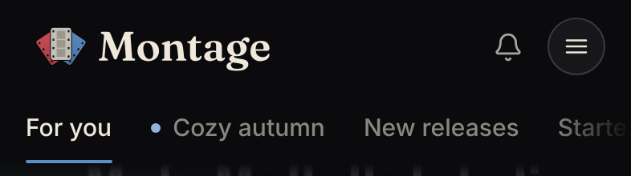
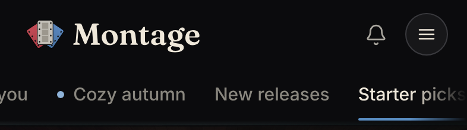
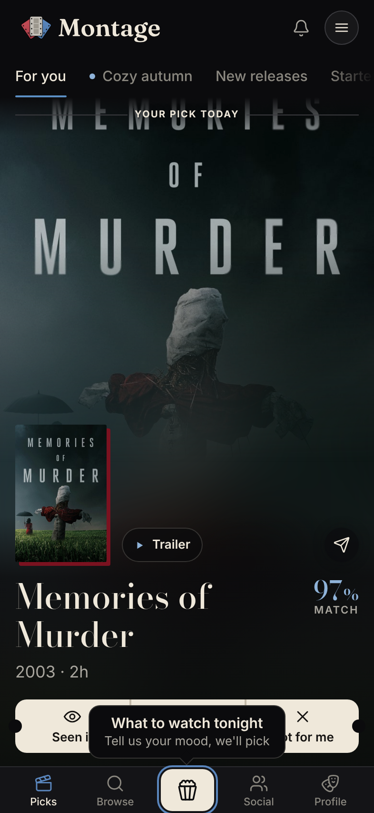
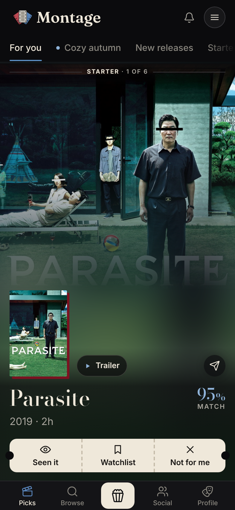
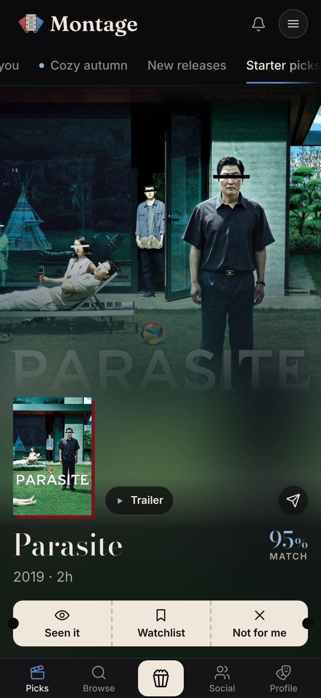
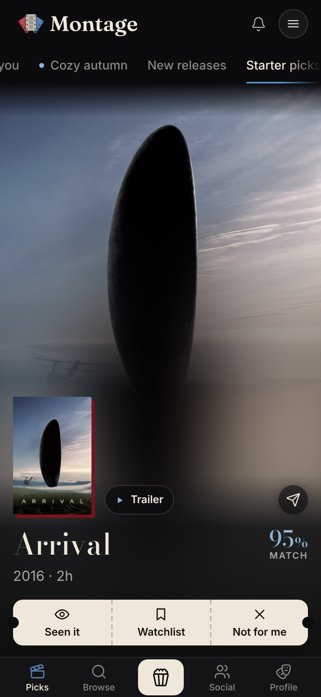
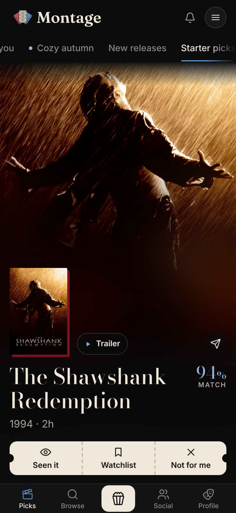

Starter picks, as the web Picks page draws them today
A new account at 18 rated (rate path, day 1), real Picks page from montage origin/main 1769911b at 393 wide; every /api answer faked (films, % and order are stand-ins, the layout and the tab logic are the app's). Day-1 tabs: For you · Cozy autumn · New releases · Starter picks (Friends enjoyed only once friends have rated enough). Starter picks is fourth and cut off at the right edge. For a newcomer, For you's week slots are the Starter list too: cards 2 to 7 read "Starter · N of 6" and are the same films, in the same order, as the Starter picks tab.
The tab row on day 1

For you selected; Cozy autumn has its new-tab dot; "Starte..." is under the trailing fade.
Starter picks selected

The row scrolls to bring the tab in.
For you · card 1

"Your pick today" leads; the popcorn coach mark shows on the first Picks.
For you · card 2 Starter · 1 of 6

The newcomer's week slots are the Starter list.
Starter picks · card 1

The same film as For you's card 2. No dateline, no reason line: the starter set has none.
Starter picks · card 2

Same as For you's card 3 (Starter · 2 of 6).
Starter picks · card 3

Popular, well-loved, ranked by match plus a crowd bonus. Up to 12 cards (the server sends 10).